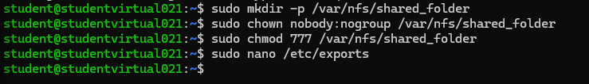
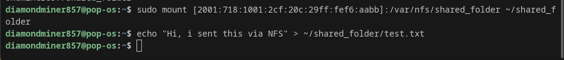
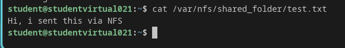
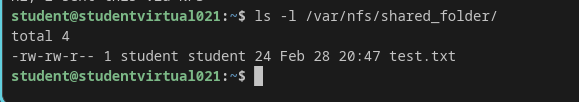

1. Teoretická část
Co je to NFS?
NFS (Network File System) je distribuovaný systém souborů původně vyvinutý společností Sun Microsystems v roce 1984. Umožňuje uživateli na klientském počítači přistupovat k souborům přes síť stejným způsobem, jako by přistupoval k lokálnímu úložišti. Pro komunikaci využívá protokol RPC (Remote Procedure Call) a standardně naslouchá na portu 2049.
Přístupová práva v Linuxu
Přístupová práva určují, kdo může soubor číst (r), upravovat (w) nebo spouštět (x). Práva se dělí do tří kategorií:
- Vlastník (User): Uživatel, kterému soubor patří.
- Skupina (Group): Skupina uživatelů sdílející stejná práva.
- Ostatní (Others): Všichni ostatní uživatelé v systému.
V kontextu NFS je klíčový koncept tzv. Root Squashing. Pokud se klient připojí jako uživatel root, NFS server jeho práva standardně omezí (přemění ho na anonymního uživatele nobody), aby se zabránilo bezpečnostním rizikům.
2. Konfigurační část
Níže jsou uvedeny kroky potřebné ke zprovoznění NFS serveru a připojení klienta na OS Ubuntu/Debian.
Nastavení NFS Serveru
1. Instalace potřebných balíčků:
sudo apt update
sudo apt install nfs-kernel-server2. Vytvoření sdílené složky a nastavení práv (chown/chmod):
sudo mkdir -p /var/nfs/shared_folder
sudo chown nobody:nogroup /var/nfs/shared_folder
sudo chmod 777 /var/nfs/shared_folder3. Konfigurace exportů (úprava souboru /etc/exports):
/var/nfs/shared_folder *rw,sync,no_subtree_checkVysvětlivky: rw (čtení/zápis), sync (zápis na disk před odpovědí), no_subtree_check (zrychluje proces vypnutím kontroly podstromu).
4. Restart služby a aplikace změn:
sudo systemctl restart nfs-kernel-server
sudo exportfs -aNastavení NFS Klienta
1. Instalace klienta a vytvoření přípojného bodu:
sudo apt install nfs-common
sudo mkdir -p /mnt/shared_folder2. Připojení (Mount) sdílené složky ze serveru:
sudo mount [server_ip]:/var/nfs/shared_folder /mnt/shared_folder3. Praktická ukázka
Níže je zdokumentován reálný průběh nastavení NFS serveru (Ubuntu) a připojení klientského zařízení s ověřením zápisu a přístupových práv.
1. Příprava složky a nastavení práv (Server)
2. Připojení klienta přes IPv6 a odeslání souboru (Klient)
3. Ověření úspěšného přenosu dat (Server)
4. Výpis přístupových práv k přenesenému souboru (Server)
4. Studijní literatura a zdroje
- Oficiální dokumentace Ubuntu Server - NFS
- Debian Wiki - Network File System
- RFC 7530 - NFS Version 4 Protocol
- Základy Linuxu: Manuálové stránky (
man nfs,man exports,man chmod).